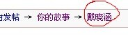
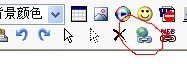

戴晓涵
#1 戴晓涵 作者：花落无痕 发表时间：2011-7-15 21:12:17
戴晓涵简历及主要战绩：
福建人，84年7月25日出生，03年接触五子棋
2006年参加浙江邀请赛B组第8，第一次参加现实赛。
2007年代表浙江参加全团赛取得冠军，兼最佳2台；
2007年全国赛第5，获5段称号；
2008年代表浙江参加全团赛取得冠军；
2009年第六届浙江五子棋邀请赛冠军；
2010年首届全国五子棋公开赛冠军。
［ 被感动的人 于 2011-7-15 21:13:26 时奖励此帖[金币加 100 威望加1］
［此帖子已被 花落无痕 在 2011-7-15 21:16:49 编辑过］
［ 以和为贵 于 2011-7-16 19:48:17 时花20金币送鲜花一朵］
#2 Re:戴晓涵 作者：被感动的人 发表时间：2011-7-15 21:12:59
这个。。。太简单了点吧~#3 Re:戴晓涵 作者：被感动的人 发表时间：2011-7-15 21:13:20
希望mm多多添加内容，小天的资料可是老多老多滴~#4 Re:戴晓涵 作者：被感动的人 发表时间：2011-7-15 21:14:47
另外由于本版某帖里有很多小天资料汇总，希望楼主多多添加新内容~."". ."",
| | / /
| | / /
| | / /
| |/ ;-._
} ` _/ / ;
| /` ) / /
| / /_/\_/\
|/ / |
( ' \ '- |
\ `. /
| |
| |
#5 Re:戴晓涵 作者：被感动的人 发表时间：2011-7-15 21:19:40
给mm提供一下参考
#6 Re:戴晓涵 作者：花落无痕 发表时间：2011-7-15 21:21:00
我先占个位置，然后再添加
#7 Re:戴晓涵 作者：梧桐风 发表时间：2011-7-15 21:21:14
 我原先也想汇总小天老师，但是我发现小天老师自己的文章还有其他棋手写的相关文章太多太多了~工作量相当巨大~
我原先也想汇总小天老师，但是我发现小天老师自己的文章还有其他棋手写的相关文章太多太多了~工作量相当巨大~
而且这个应该是茶馆里复制的噢，既然要汇总就要用心汇总啦~工作量很大滴~单单爱五子棋网搜索一下就N多啦~
#8 Re:Re:戴晓涵 作者：被感动的人 发表时间：2011-7-15 21:24:02
引用：相当赞同，汇总小天老师工作量相当可观~
原文由 梧桐风 发表于 2011-7-15 21:21:14 :
#9 Re:戴晓涵 作者：花落无痕 发表时间：2011-7-15 21:28:23
晕了，那些链接怎么弄呀
#10 Re:戴晓涵 作者：花落无痕 发表时间：2011-7-15 21:30:58
这帖子也太不象样子了，要么这样吧，当这个为试验品，我再重新做一个吧
#11 Re:Re:戴晓涵 作者：被感动的人 发表时间：2011-7-15 21:41:54
打开帖子以后复制最上面的标题，就是带链接的。如图：

或者不打开帖子，在这样的界面复制：
这个帖子不用作废，最后版主会把你最后一个汇总最全的回帖提到1楼，如果嫌费事的话可以先把除图片之外的内容复制到word文档里先整理好再一起发。
#12 Re:戴晓涵 作者：花落无痕 发表时间：None
戴晓涵相关文章列表
·博弈规则（全）http://http://www.wuzi8.com/Article/HTML/1057.html
·看看你的棋风属于哪种流派http://http://www.wuzi8.com/Article/HTML/1497.html
·第二届全国五子棋团体赛——了却夙愿http://http://www.wuzi8.com/xiti/HTML/1894.html
·戴晓涵：第六届浙江邀请赛回顾http://www.wuzi8.com/xiti/HTML/1923.html
·献给五子棋爱好者ShowPost.asp?ThreadID=9226
·戴晓涵： 2010 全国五子棋公开赛简评http://www.wuzi8.com/xiti/HTML/2547.html
·五子棋“补杀”技巧简介ShowPost.asp?ThreadID=10523
by:web版  IP：
已记录
IP：
已记录
#13 Re:Re:戴晓涵 作者：被感动的人 发表时间：2011-7-15 21:46:52
这个没链接的，要是这样弄需要这样操作。
写上标题后点击这里
，把链接加进去
#14 Re:戴晓涵 作者：踵酃 发表时间：2011-7-15 22:26:44
我试试看
［ 被感动的人 于 2011-7-16 9:14:28 时花20金币送鲜花一朵］
#15 Re:Re:戴晓涵 作者：被感动的人 发表时间：2011-7-16 9:14:04
引用：
原文由 花落无痕 发表于 2011-7-15 21:44:41 :戴晓涵相关文章列表
·博弈规则（全）http://http://www.wuzi8.com/Article/HTML/1057.html
·看看你的棋风属于哪种流派http://http://www.wuzi8.com/Article/HTML/1497.html
·第二届全国五子棋团体赛——了却夙愿http://http://www.wuzi8.com/xiti/HTML/1894.html
·戴晓涵：第六届浙江邀请赛回顾http://www.wuzi8.com/xiti/HTML/1923.html
·献给五子棋爱好者ShowPost.asp?ThreadID=9226
·戴晓涵：2010全国五子棋公开赛简评http://www.wuzi8.com/xiti/HTML/2547.html
·五子棋“补杀”技巧简介ShowPost
#16 Re:Re:Re:戴晓涵 作者：花落无痕 发表时间：2011-7-16 9:21:33
引用：谢谢，等下我试试
原文由 被感动的人 发表于 2011-7-16 9:14:04 :想做出韦振强帖子的操作效果来，把自己打出来的标题文字选中再添加链接就可以了
#17 Re:戴晓涵 作者：小小亦默 发表时间：2011-7-16 9:36:49
小天老师的补杀、先手和立体感理念很有见地~
#18 Re:戴晓涵 作者：花落无痕 发表时间：2011-7-16 9:57:07
很多资料都是其他网站的，而有些网站打开速度又超慢（不想坏了大家的心情），郁闷！
#19 Re:戴晓涵 作者：被感动的人 发表时间：2011-7-16 10:40:00
可以将本站没有的文章转到故事版来，，技术类文章可以转到无敌天下，那是小天专区。每篇高质量文章1威望#20 Re:Re:戴晓涵 作者：花落无痕 发表时间：2011-7-16 18:03:02
引用：
原文由 花落无痕 发表于 2011-7-15 21:44:41 :戴晓涵相关文章列表
·博弈规则（全）http://http://www.wuzi8.com/Article/HTML/1057.html
·看看你的棋风属于哪种流派http://http://www.wuzi8.com/Article/HTML/1497.html
·第二届全国五子棋团体赛——了却夙愿http://http://www.wuzi8.com/xiti/HTML/1894.html
·戴晓涵：第六届浙江邀请赛回顾http://www.wuzi8.com/xiti/HTML/1923.html
·献给五子棋爱好者ShowPost.asp?ThreadID=9226
·戴晓涵：2010全国五子棋公开赛简评http://www.wuzi8.com/xiti/HTML/2547.html
·五子棋“补杀”技巧简介ShowPost
#21 Re:戴晓涵 作者：被感动的人 发表时间：2011-7-16 19:32:43
嗯，mm聪明~！#22 Re:戴晓涵 作者：以和为贵 发表时间：2011-7-16 19:52:25
好好学习，天天向上。
#23 Re:Re:戴晓涵 作者：花落无痕 发表时间：2011-7-17 11:10:27
引用：
原文由 花落无痕 发表于 2011-7-15 21:44:41 :戴晓涵相关文章列表
·博弈规则（全）http://http://www.wuzi8.com/Article/HTML/1057.html
·看看你的棋风属于哪种流派http://http://www.wuzi8.com/Article/HTML/1497.html
·第二届全国五子棋团体赛——了却夙愿http://http://www.wuzi8.com/xiti/HTML/1894.html
·戴晓涵：第六届浙江邀请赛回顾http://www.wuzi8.com/xiti/HTML/1923.html
·献给五子棋爱好者ShowPost.asp?ThreadID=9226
·戴晓涵：2010全国五子棋公开赛简评http://www.wuzi8.com/xiti/HTML/2547.html
·五子棋“补杀”技巧简介ShowPost
#24 Re:Re:Re:戴晓涵 作者：花落无痕 发表时间：None
引用：
原文由 花落无痕 发表于 2011-7-15 21:44:41 :戴晓涵相关文章列表
·博弈规则（全）http://http://www.wuzi8.com/Article/HTML/1057.html
·看看你的棋风属于哪种流派http://http://www.wuzi8.com/Article/HTML/1497.html
·第二届全国五子棋团体赛——了却夙愿http://http://www.wuzi8.com/xiti/HTML/1894.html
·戴晓涵：第六届浙江邀请赛回顾http://www.wuzi8.com/xiti/HTML/1923.html
·献给五子棋爱好者ShowPost.asp?ThreadID=9226
·戴晓涵：2010全国五子棋公开赛简评http://www.wuzi8.com/xiti/HTML/2547.html
by:web版
#25 戴晓涵 作者：花落无痕 发表时间：2011-7-17 11:42:20
引用：
原文由 花落无痕 发表于 2011-7-15 21:44:41 :戴晓涵相关文章列表
·博弈规则（全）http://http://www.wuzi8.com/Article/HTML/1057.html
·看看你的棋风属于哪种流派http://http://www.wuzi8.com/Article/HTML/1497.html
·第二届全国五子棋团体赛——了却夙愿http://http://www.wuzi8.com/xiti/HTML/1894.html
·戴晓涵：第六届浙江邀请赛回顾http://www.wuzi8.com/xiti/HTML/1923.html
·献给五子棋爱好者ShowPost.asp?ThreadID=9226
·戴晓涵：2010全国五子棋公开赛简评http://www.wuzi8.com/xiti/HTML/2547.html
#26 Re:戴晓涵 作者：花落无痕 发表时间：2011-7-17 18:04:23
《奇异视角下的五子棋》系列，在本论坛曾上载过，应一些坛友的要求，将其归纳。同时征得了作者的同意。#27 Re:戴晓涵 作者：花落无痕 发表时间：2011-7-17 18:12:04
引用：
原文由 花落无痕 发表于 2011-7-15 21:44:41 :戴晓涵相关文章列表
#28 Re:戴晓涵 作者：蓝天蓝 发表时间：2011-7-19 23:48:42
戴晓涵五子棋随感[连载]爱五子棋网独发
走别人的路，让别人无路可走(  12 )
12 )
小天：疏星弱6分析之一( 123 )
［ 被感动的人 于 2011-7-23 20:40:05 时花20金币送鲜花一朵］
#29 Re:戴晓涵 作者：花落无痕 发表时间：2011-7-21 22:33:17
谢谢‘蓝天蓝’帮我补充
#30 Re:戴晓涵 作者：猪小姐 发表时间：2011-7-23 15:46:15
2006年浙江邀请赛B组第8
2007年全国团体赛代表浙江冠军，最佳2台；
2007年全国锦标赛第5名；
2008年全国团体赛代表浙江冠军；
2008年浙江邀请赛第7名；
2008年全国锦标赛22名；
2009年浙江邀请赛冠军；
2009年全国锦标赛19名；
2009年智运会个人第4名；
2009年智运会男女混合代表福建第3
2010全国团体赛代表福建第2名
2010全国公开赛冠军；
2010浙江邀请赛冠军；
2010全国锦标赛第3名；
2011年ATQT预选赛第2名；
2011全团赛代表华夏第三
2011年公开赛冠军
补充小天战绩
［ 蓝天蓝 于 2011-7-23 19:28:26 时花20金币送鲜花一朵］
［ 蓝天蓝 于 2011-7-23 19:29:18 时花20金币送鲜花一朵］
［ 花落无痕 于 2011-7-23 20:04:14 时花20金币送鲜花一朵］
［ 被感动的人 于 2011-7-23 20:40:11 时花20金币送鲜花一朵］
#31 Re:戴晓涵 作者：花落无痕 发表时间：2011-7-23 20:04:45
谢谢楼上的补充［ 被感动的人 于 2011-7-23 20:40:24 时花20金币送鲜花一朵］
#32 Re:戴晓涵 作者：被感动的人 发表时间：2011-7-23 20:41:08
楼上把汇总弄全了吧~这个弄全了可以再赚1威望了~加油！#33 Re:戴晓涵 作者：花落无痕 发表时间：2011-7-23 22:24:06
威望自然是想要，但是在没得到作者明确态度的情况下，还是不方便做的。［此帖子已被 花落无痕 在 2011-7-23 22:25:44 编辑过］